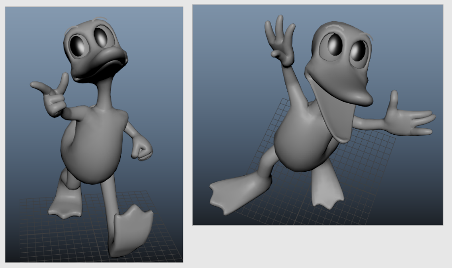
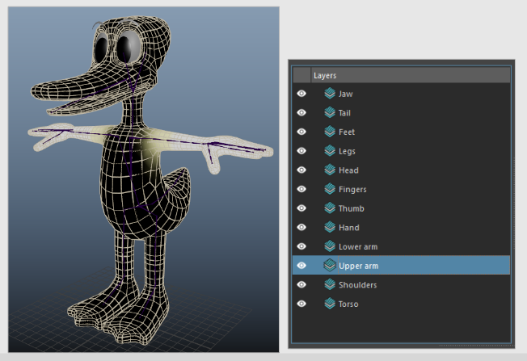

Journal three
Feb 12 2026 to March 05 2026

What I've done:
- A lot of looking into more advanced mGear topics (custom scripts, data-centric rigging, etc.)
- I've decided to limit the complexity and not hold myself to a standard of having everything seperate and building it at the end (though I would like to learn that).
- Adjusted all of my control sizes
- Fixed my model by adding a few more loops around the finger joints
- Using ngSkinTools I was able to export my layers, then import them back in on the edited mesh, and everything worked mostly perfectly :D
- Learned about deformation order to make my lattice eyes work
Skinning
Initially I followed this mGear video guide to get my weights in but I found it got a bit hard to refine, and I was curious to learn more about ngSkinTools.
Using the concepts from this video I set up the skinning again using layers, and I found the process a lot more enjoyable!

What's next?
- Blendshapes
- Add weights to clothes, experiement with how to rig the pieces
- Eyebrow joints
- Expression controls